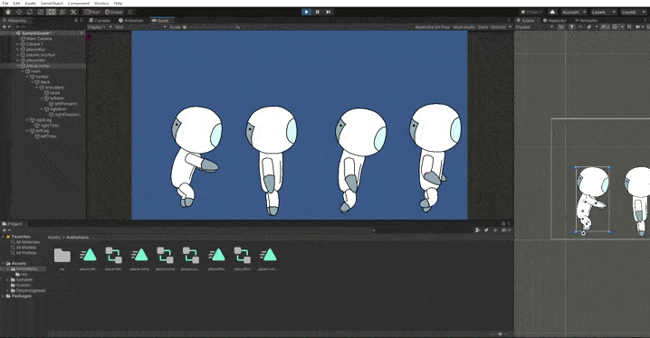

LOST ON EARTH
Lost On Earth est un projet de jeu 2D narratif dont l'histoire dystopique se déroule dans un futur proche où notre monde court à sa perte à cause de l'accumulation de pollution, l'histoire sera en grande partie axée sur l'évolution dela santé mentale du héros qui devra sauver l'espèce humaine du désastre qui les attend. Comme pour tout bon jeu contemplatif il n'y aura pas de dialogue mais des décors et des cinématiques travaillées au mieux. Ce jeu sera gratuit et devrait sortir a l'horizon 2024 (date théorique, modifiée selon les avancées du projet).
PARTICIPANTS
Chef de projet:
Dessinateurs:
Scénaristes:
Dévelopeurs: